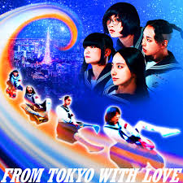

Welcome To My Dungeon!
Welcome To My Dungeon! Welcome To My Dungeon!
Welcome To My Dungeon!Just to share some of my music interests, I'm really interested in ATARASHII GAKKO's newest album, From Tokyo With Love. This album contains a lot of Western 80s pop music. I usually enjoy listening to their music while I'm at the gym or drawing. Or, if I want to take a walk, I'll usually turn on the entire ATARASHII GAKKO From Tokyo With Love album. By then, I'll be maladaptively dreaming about my personas and characters through a visual animated sequence only I can see. Maladaptive dreaming is weird but a lot of people experience it whenever it's triggered by sound or vivid animations.
Right below, you can listen to a few audio clips of one of my favorite songs that I've saved on my own music playlist. My current favorites from this album is TTTTOKYO and Take Me With You. To give you a brief reason why, I simply enjoy the way it sounds. If I had a car that allowed me to connect my phone into the radio, this song would be playing all the time, especially for extrmely long drives. <3
